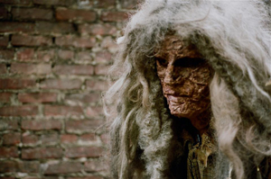

past performance |
|||
|
Conversations with Claywoman Claywoman, a 500 million year old enigma who hails from the Mirillion Galaxy, has just confirmed that she will be returning to Earth on November 15th to engage with those interested in her work. In a recent statement she had this to say about her upcoming appearance. "Coming to Earth Reminds me that Everything hasn't happened in exactly the same order it was advertised" |
 | ||
|
Claywoman was developed by Michael Cavadias initially as part of The Black Lips Performance Cult in the early 90's as well as in a residency at Mabou Mines. A mock documentary and accompanying performance, directed by Rob Roth and titled "The Mystery of Claywoman” were created in 2008. The documentary stars the likes of Debbie Harry, Justin Vivian Bond, Amy Poehler, and Alan Cumming among many others. Various incarnations of "The Mystery of Claywoman" showed at Deitch Projects, The New Museum, Abrons Art Center, The Meltdown Festival, The Howl Festival, and opening for Antony and the Johnsons at Town Hall. For the past 2 years Claywoman has been doing more intimate and interactive performances at venues ranging from THE HOLE, to the infamous House of Collection and is produced by downtown producer and performer Eric Schmalenberger. |
|||
upcoming performances |
|||
 |
|||
| EVQ Film Festival 2018 August 20-25 |
|||
performance archives |
|||
| 2018 | 2017 | 2016 | 2015 |
| 2014 | 2013 | 2012 | 2011 |
| 2010 | 2009 | 2008 | 2007 |